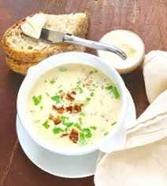

Home
Creamy Roasted Garlic Soup

This creamy roasted garlic soup begins with roasted garlic, which is mellow, sweet, and aromatic, unlike the bite of raw garlic. This is not a thick soup like chowder. It is a pureed version with savory and subtle garlic flavor, onions, and potatoes. I like to serve it as a starter to a really special meal or even when one of us is a little under the weather.
Ingridients
- 3 large heads fresh garlic
- 1 tablespoon olive oil
- 1 tablespoon unsalted butter
- 1 large onion, peeled and roughly chopped
- 1 teaspoon dried thyme
- 1/2 cup dry white wine
- 4 cups unslated chicken stock or broth
- 1 large russet potato, peeled and cubed small
- 1/2 cup heavy cream
- 1/2 cup freshly grated Parmesan cheese
- salt and freshly ground black pepper to taste
- 2 strips bacon, cooked crisp and crumbled
- freshly chopped parsley, for garnish
Steps
- Preheat the oven to 400 degrees F (200 degrees C).
- Trim 1/4 inch off the top stem end of each garlic bulb, and remove the loose outer papery layers. Place cut sides up on a piece of foil large enough to hold all of the garlic heads. Drizzle with olive oil. Wrap the foil tightly around the garlic heads, and place the foil packet upright in a small baking dish.
- Roast in the preheated oven until tender and fragrant, 40 to 60 minutes. Set aside to cool.
- Meanwhile, melt butter in a soup pot over medium-high heat. Add onion and thyme and saute until onion is translucent, 3 to 5 minutes. Stir in white wine, and cook for 3 minutes.
- Reduce heat to a low boil and stir in chicken stock and potatoes. Cover the pot, and cook until potatoes are tender, 15 to 20 minutes.
- When garlic is cool enough to handle, squeeze soft cloves out of the skin, smash into a creamy paste with a fork, and stir into the hot soup.
- Use an immersion blender to puree soup until smooth. If using a regular blender, do not fill the container to the top. Allow the soup to cool a few minutes, add half to the blender each time. Hold the lid down with a towel while blending to avoid the possibility of soup splashing out, and return soup to the pot.
- Stir in cream and Parmesan, and season with salt and pepper. Simmer soup for another 5 minutes. Top with bacon, sprinkle with parsley, and serve hot.